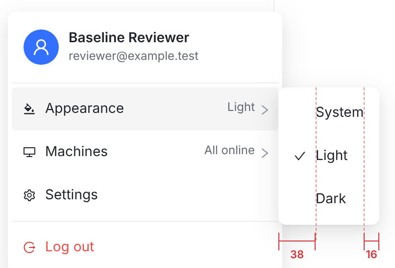
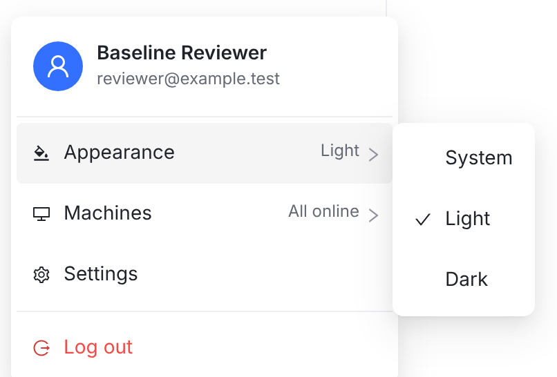
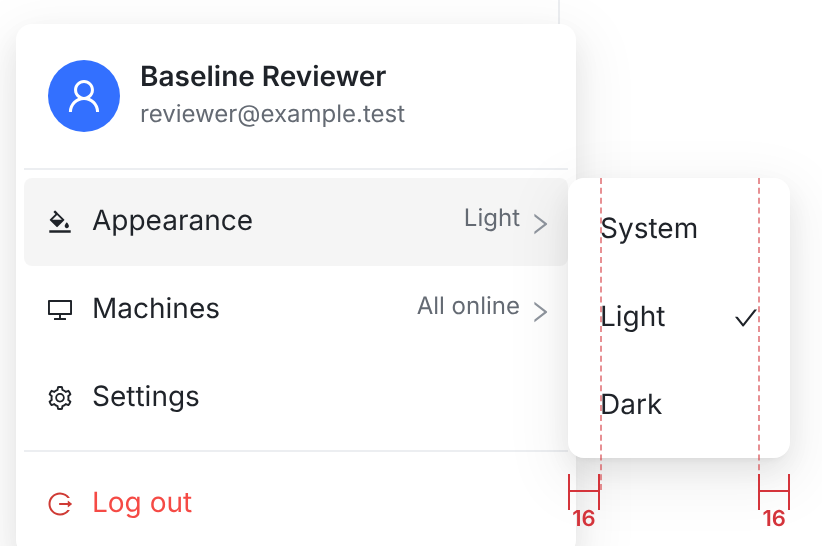
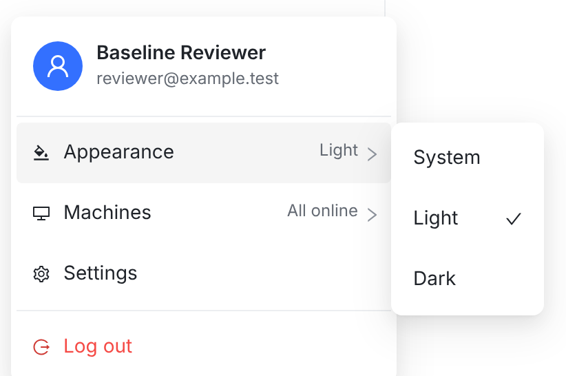
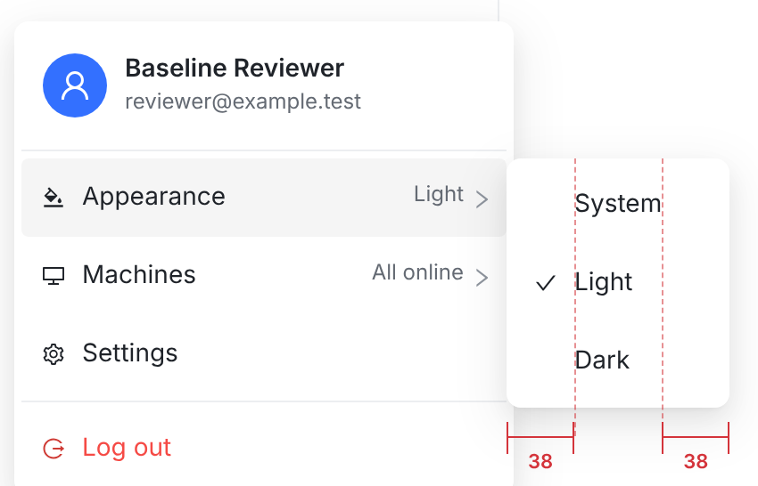
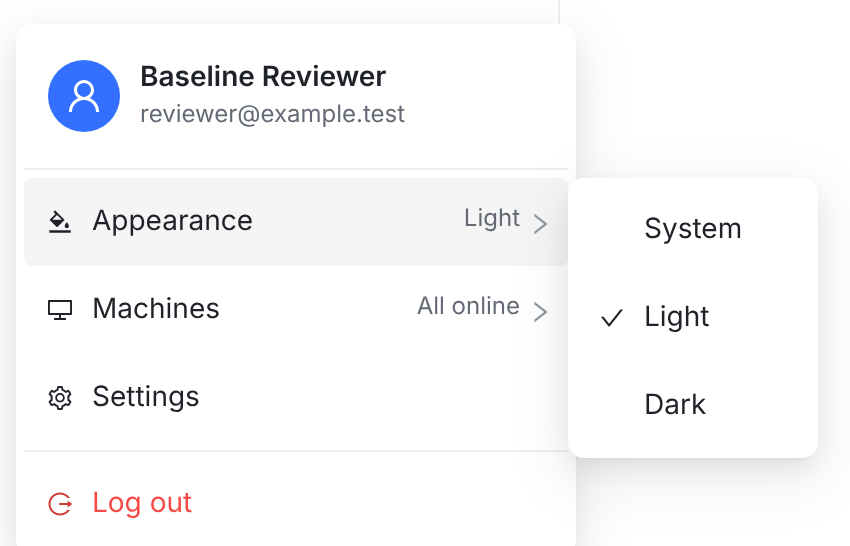

The real web page at 2×, light theme. Red dimension lines measure the labels' left margin and the right margin of the last mark (text or check), in CSS px from the popup's edge.
The check sits in a 14 px slot in front of every row, used or not. The labels start 38 px in (16 + 14 + 8 gap); "System" ends 16 px from the right edge. Left is more than twice the right.


Labels start at 16 px, the check ends 16 px from the right: the same margin on both sides, for every row. It is where the app's other checked menu rows already draw their check (Menu.tsx checkbox rows).


Keeps the check in front and widens the right padding until it equals the label indent: 38 / 38. The labels balance, but the popup grows 22 px wider, and the check alone still sits at 16 px, so the left edge stays ragged.


tp-account-submenu.